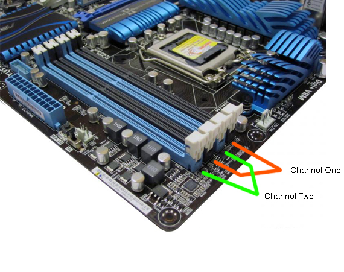

Dans un ordinateur, un slot (de l'anglais) est une
fiche, un connecteur sous forme de fente dans laquelle
on insère une carte d'extension ou une barrette de
mémoire, voire certains processeurs conditionnés sous
forme de cartouche.
Voir une vidéo

En savoir plus